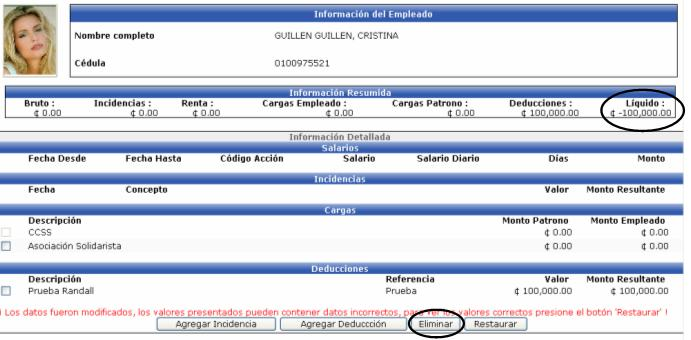
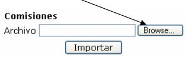
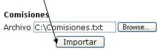
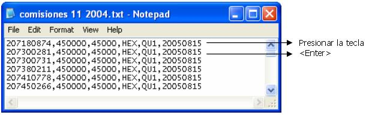

En esta opción es donde se realiza el cálculo de pagos extra nómina de la empresa, según el tipo de nómina seleccionado (semanal, bisemanal, quincenal, mensual). Dichos pagos pueden ser aguinaldos, pago de comisiones, ajustes a salarios, los cuales toman en cuenta el cálculo de renta si fuese el caso.
El usuario únicamente tiene que seleccionar el tipo de nómina y digitar una descripción ya que el sistema automáticamente le desplegará el código de calendario de pago y las fechas desde – hasta, según la parametrización que se le realizó al tipo de nómina seleccionado. Cabe recordar que los tipos de nómina que se desplieguen en la lista, serán los que tengan asociado un calendario de pago de Tipo Especial (este proceso se explicará en el manual: “Parámetros RH”).
Al hacer un click en el botón “Calcular”, el sistema agrupara por tipo de nómina, la lista de empleados que pertenecen a ella.

Si se activa el siguiente check  y se presiona el botón Filtrar, el sistema trae los registros
que no pudo calcular, ya sea por que falta información por aplicar o porque
los salarios líquidos están con montos negativos.
y se presiona el botón Filtrar, el sistema trae los registros
que no pudo calcular, ya sea por que falta información por aplicar o porque
los salarios líquidos están con montos negativos.
Si algún empleado tiene el siguiente ícono al lado derecho del mismo, significa que puede tener acciones de personal pendientes de aplicar (ir a la opción de acciones de personal y aplicar las pendientes) o que el salario líquido es negativo. Para solucionar un salario negativo, se debe de presionar dicho registro del empleado y en la siguiente pantalla eliminar deducciones para tratar de que el salario quede positivo, si aún así queda negativo, se tienen que agregar incidencias.
Al eliminar deducciones o incidencias para el cálculo de esa planilla, hay que tener presente que NO se eliminan del Registro de Deducciones o del de Incidencias según corresponda, solamente se eliminan para el cálculo específico de dicha nómina. Para esto se tiene que seleccionar el registro a excluir y presionar el botón y la nómina se recalculará automáticamente. Las deducciones que se pueden borrar son aquellas que NO sean de Ley o las que NO sean Obligatorias. (Esto se define en el módulo de Parámetros RH)
También tiene la opción de restablecer
la información eliminada, presionando el botón  y la nómina
se recalculará automáticamente.
y la nómina
se recalculará automáticamente.

Los siguientes botones se presentan en la pantalla de lista de empleados:
Al presionar este botón, el sistema le pedirá al usuario que ingrese la cuenta cliente a debitar para cuando se realice el pago de la nómina especial:

Una vez ingresada la cuenta a debitar, se presiona el botón , el cual registra la información en los históricos para luego, ser contabilizada. Además pasa el registro de nómina a un proceso de verificación, antes de que el usuario realice el pago correspondiente de dicha nómina (este proceso de verificación se explicará en el manual: “Recepción de Pagos”).
Si se presiona este botón , el sistema le preguntara que si desea restaurar la relación
de cálculo? Si la respuesta es SI, entonces se vuelve a recalcular la
nómina:

Este botón estará activo o parecerá en
la pantalla solamente si en el módulo de Parámetros RH en la opción Parámetros
Generales en la sección Cálculo de Comisiones esta activado el check 
Sirve para agregar comisiones a los empleados de la empresa. Si se ingresan manualmente se debe de escoger un empleado, el concepto de la comisión, el monto base(salario real), el monto de la comisión y el centro funcional:

Si se desea importar masivamente comisiones,
desde un archivo de texto, se presiona el botón  y se
presenta la siguiente pantalla:
y se
presenta la siguiente pantalla:

Las instrucciones a seguir y el formato que tiene que tener el archivo de texto, se describen a continuación:
Pasos para la Importación:
Selección de Archivo: seleccione el archivo que desea importar, presionando el botón “Browse”

Importación: una vez seleccionado el archivo presione el botón de “Importar”

Resumen de Importación: al importar el archivo se mostrará información relacionada con la importación.
Revisión: una vez importado el archivo puede revisar la importación en la lista de comisiones por empleado.
Formato del Archivo de Importación:
El archivo debe ser un archivo plano y debe de tener las siguientes columnas:
1. Identificación del Empleado.
2. Salario Base.
3. Monto de la Comisión.
4. Código del Concepto de Comisión (código de la incidencia donde se va a cargar la comisión).
5. Nómina.
6. Fecha de Pago (de la nómina).
Para separar las columnas se debe de utilizar una coma (,) y para el fin de línea se debe de presionar la tecla <Enter>
Un ejemplo del archivo a importar es el siguiente:
